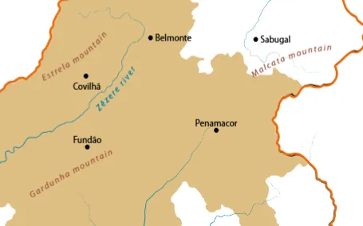
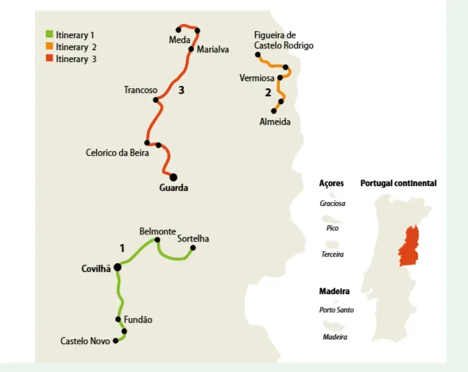
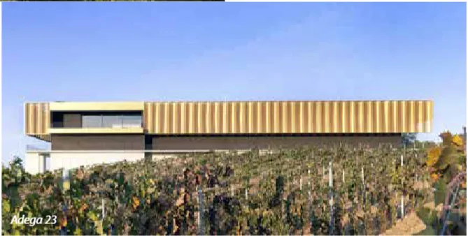
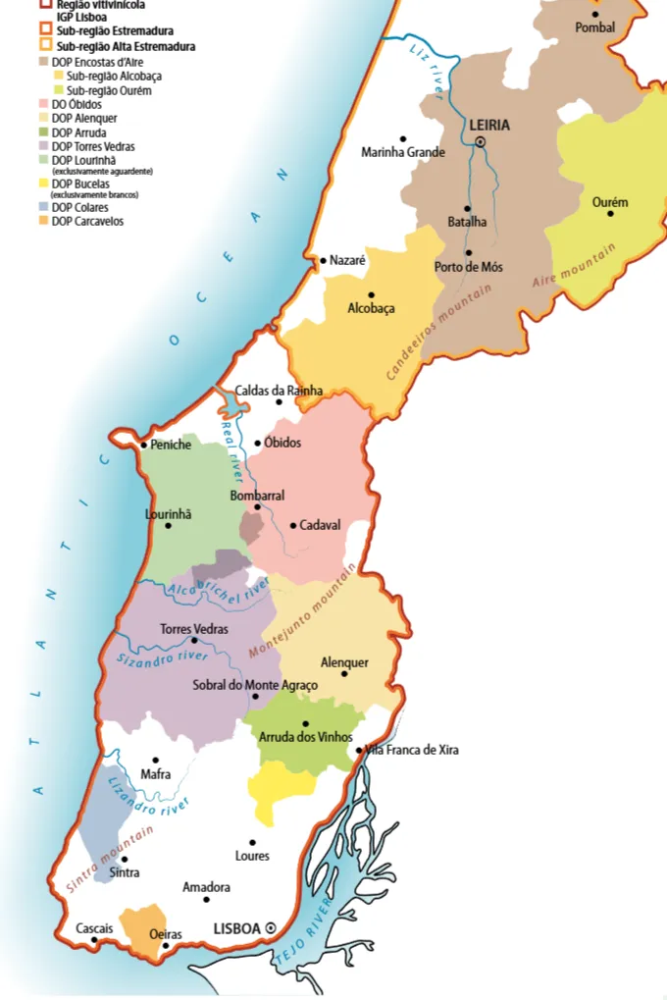

Kapitel 4 · Die portugiesischen Weinregionen
Weinregion Beira Interior
Kennzahlen (2022)
Rebfläche: 14.058 ha
Gesamterzeugung: 20.201.800 Liter
Geschichte
Die Terras da Beira waren das Kernland der Lusitaner, deren König Viriatus 139 v. Chr. von den Römern ermordet wurde, die das Land anschließend in Besitz nahmen. Die gefundenen Zeugnisse deuten auf eine Besiedlung zwischen der ersten Hälfte des 1. Jahrhunderts n. Chr. und dem Beginn des 5. Jahrhunderts n. Chr. Dokumentiertes Wissen ist sehr spärlich, trotz zahlloser Hinweise auf römischen Weinbau (Virgílio Loureiro) wie in den Fels gehauene Weinpressen, erhaltene Traubenkerne aus dieser Zeit und Amphoren, die eine römische Präsenz in der Beira Interior belegen. Rund sechshundert Jahre später kamen die Westgoten. Sie wie die Römer waren eng mit dem Weinbau verbunden. Die muslimischen Araber interessierten sich weniger für den Rebbau. Eine weitere Besonderheit des mittelalterlichen Weins beruht auf der Rolle der Kirche und der Orden, besonders ab dem 12. Jahrhundert, die die Erzeugung des „Blutes Christi“ kontrollieren wollten. Mit den Erfolgen der Reconquista begannen die Zisterziensermönche im 12. Jahrhundert, den Weinbau wiederzubeleben. Das im 12. Jahrhundert von Einsiedlern gegründete und später dem Zisterzienserorden eingegliederte Kloster Santa Maria de Aguiar spielte sicher eine wichtige Rolle für die Weinbaugeschicke der Region. Die Mönche dürften bei der Sortenwahl entscheidend gewesen sein, denn einige dieser Sorten wie Marufo, Folgasão, Rufete und Fonte Cal sind typischerweise endemischen Ursprungs. In der zweiten Hälfte des 20. Jahrhunderts fielen besonders die Roséweine der Unterregionen Castelo Rodrigo, Pinhel und Cova da Beira immer wieder durch hohen önologischen Wert auf, vor allem in den Vereinigten Staaten und in Nordeuropa (nach der Website der CVR Beira Interior). 1999 erhielten die Weinregion und diese drei Unterregionen den amtlichen Status für Qualitätswein (VQPRD).
Terroir
Klima nach Köppen-Geiger:
Csb, in einigen angrenzenden Gebieten (Fundão) Csa – feuchtgemäßigtes Klima mit sommerlicher Trockenzeit. Das Klima steht unter extremen kontinentalen Einflüssen mit beträchtlichen Tagestemperaturschwankungen. Die Sommer sind sehr kurz, aber extrem heiß und trocken, die Winter lang und sehr kalt. Das Klima kann in den Unterregionen je nach Beschaffenheit und der geologischen Zäsur durch die fast 2.000 Meter hohe Serra da Estrela variieren.
Indizes des MCC-Systems (Tonietto & Carbonneau, 2004): Das Klima schwankt zwischen Castelo Rodrigo im Norden mit heliothermischem Index (HI): −1, Kühle-Nacht-Index (CI): +2, Trockenheitsindex (DI): +1, und der weiter südlich gelegenen Cova da Beira mit HI: +1, CI: +1 und DI: +1. Fröste Ende April und Gewitter mit Hagel im Mai sind Wetterprobleme der Region. Die Abende sind im Sommer kühl und bleiben während Lese und Gärung kalt. Schon vor dem Aufkommen moderner Techniken der kontrollierten Gärung ermöglichten diese Temperaturen frische und aromatische reife Weine. Man kann sagen, dass die Berge für die große Exportzeit der Beira Interior Mitte des 20. Jahrhunderts verantwortlich waren, denn die Region ist von den Gebirgen Estrela, Marofa und Malcata umgeben, die die Weine ebenso prägen wie die Höhenlagen von 400 bis 700 Metern. Das Klima ist sehr rau, mit Temperaturen unter 0 °C. Im Winter schneit es manchmal, die Sommer sind sehr heiß und trocken. Diese Kombination ergibt sehr aromatische, üppige und leichte Weißweine und Rotweine voller komplexer Aromen von Wildfrüchten und Gewürzen mit ausgeprägter Frische.
Niederschlag: Castelo Branco 695 mm; Pinhel 750 mm
Geologie: Die Region liegt im nördlichen Landesinneren nahe der spanischen Grenze, im zerklüftetsten und steilsten Bergland des portugiesischen Festlands. Sie umfasst die Serra da Marofa, die Serra da Gardunha und einen Teil der Serra da Estrela, die ihren Weinen ein reicheres und ausgeprägteres Aroma verleihen als in anderen Regionen, das an das Nachbarland mit seinen großen Weinregionen in Kastilien und León erinnert. Die Böden sind überwiegend granitisch, teils mit Schiefer und gelegentlich, seltener, mit sandigem Anteil. Die drei Unterregionen haben ähnliche Merkmale, obwohl Gebirge mit Gipfeln über 1.000 Metern sie trennen; die Kombination aus kargen Böden, hoher Säure und kräftiger Reife verspricht der Region eine gute Zukunft. Die Cova da Beira weist einige Besonderheiten auf, da sie sich von den östlichen Ausläufern der Serra da Estrela bis ins Tejotal südlich von Castelo Branco erstreckt.
Höhe der Weinberge: 400–700 Meter
Erzeugte Weintypen
IG-Wein Terras da Beira bzw. Landwein Terras da Beira:
Rot, Weiß, Rosé, Schaumwein, Perlwein.
DO-Wein Beira Interior (VQPRD): Rot, Rot Palhete, Rot Selecção,

Weinregion
Weinbauregion IG Terras da Beira, DOP Beira Interior – Unterregionen
Unterregion Castelo Rodrigo · Unterregion Pinhel · Unterregion Cova da Beira


Fluss Erges
Weiß, Weiß Selecção, Rosé. Schaumweine Beira Interior (VEQPRD): Rot, Weiß, Rosé.

Regionale Kontakte
Technische Informationen und Zertifizierungsstelle: Comissão Vitivinícola Regional da Beira Interior (Regionale Weinbaukommission der Beira Interior), Av. Cidade de Safed, Lt. 7 – 1.º, 6300-537 Guarda, Tel.: 271 224 129, Fax: 271 223 101; E-Mail: cvrbi@cvrbi.artelecom.pt,
Website: www.cvrbi.pt
Kulturelle Informationen zum Wein der Region: Sala Museu do Vinho (Weinmuseum), 6200-165 Covilhã – Quinta das Poldras.
Hochschulen und Weinbauforschung:
Escola Superior Agrária do Instituto Politécnico de Castelo Branco (Landwirtschaftliche Hochschule des Polytechnischen Instituts Castelo Branco), Quinta da Senhora de Mércules, 6000-909 Castelo Branco, Tel.: 272 339 900,
Website: www.ipcb.pt
Zertifizierungsstelle: Comissão Vitivinícola Regional da Beira Interior, Av. Cidade de Safed – Lote 7 – 1.º, 6300-537 Guarda, Tel.: 271 224 129, Fax: 271 223 101
Website: www.cvrbi.pt, E-Mail: cvrbi@cvrbi.artelecom.pt
Weintourismus: Weinroute der Beira Interior, Av. Cidade de Safed – Lote 7 – 1.º, 6300-537 Guarda, Tel.: 271 224 129,
Website: www.cvrbi.pt
Informationen zu Erzeugern und Abfüllern:
http://www.ivv.min-agricultura.pt/np4/1736.html, IVV-Jahrbuch 2010/2011, S. 182.
Botanik (Biodiversität) und zugelassene Sorten
Rechtsgrundlage: Verordnung Nr. 104/2017 vom 9. März, Nr. 163/2011 vom 18. April und Gesetzesdekret Nr. 212/2004 vom 23. August.

Rotweine: Água Santa, Alfrocheiro (Tinta Bastardinha), Alicante Bouschet, Alvarelhão (Brancelho), Aragonez (Tinta Roriz, Tempranillo), Baga, Bastardo (Graciosa), Cabernet Franc, Cabernet Sauvignon, Camarate, Campanário, Castelão, Grand Noir, Jaen (Mencía), Malvasia Preta, Marufo (Mourisco Roxo), Merlot, Monvedro, Moreto, Pilongo, Pinot Noir, Português Azul (Blauer Portugieser), Rufete (Tinta Pinheira), Syrah (Shiraz), Tinta Barroca, Tinta Carvalha, Tinta Francisca, Tinta Negra (Molar, Saborinho), Tinto Cão, Touriga Fêmea, Touriga Franca, Touriga Nacional, Trincadeira (Tinta Amarela, Trincadeira Preta), Vinhão (Sousão), Gewürztraminer und Malvasia Fina Roxa.


Weißweine: Alicante Branco, Alvar, Alvarinho, Arinto (Pedernã), Arinto do Interior, Azal, Barcelo, Batoca (Alvaraça), Bical (Borrado das Moscas), Cercial, Chardonnay, Chasselas, Encruzado, Fernão Pires (Maria Gomes), Folgasão, Folha de Figueira (Dona Branca), Fonte Cal, Gouveio, Loureiro, Malvasia Fina, Malvasia Rei, Pinot Blanc, Rabo de Ovelha, Riesling, Sauvignon (Sauvignon Blanc), Semillon, Sercial (Esgana Cão), Sercialinho, Síria (Roupeiro, Códega), Tália (Ugni Blanc, Trebbiano Toscano), Tamarez (Molinha), Terrantez, Uva Cão, Verdelho, Verdial Branco, Viosinho und Vital.

Renommierte Weingüter
in der Region: Adega Cooperativa de Pinhel, CRL
Diese Winzergenossenschaft mit 1.800 aktiven Mitgliedern hat eine mittlere Traubenernte von 17.000 Tonnen. Die Adega Cooperativa de Figueira de Castelo Rodrigo hat derzeit 800 Mitglieder, die gemeinsam jährlich 8.500.000 kg Trauben erzeugen. Adega Cooperativa do Fundão. Quinta dos Termos: leidenschaftliche Investition eines sehr erfolgreichen Textilunternehmers in ein 200 Hektar großes Familiengut, davon 60 Hektar Weinberge, mit einer modernen, professionell geführten Kellerei.
Quinta do Cardo: Rund 79 der 180 Hektar des Gutes sind mit ökologisch bewirtschafteten Weinbergen auf durchschnittlich 750 Metern Höhe bepflanzt. Ziel ist eine Jahreserzeugung von 500.000 Flaschen bis 2025, mehr als doppelt so viel wie 2022.
Adega 23 entstand aus der Leidenschaft einer Augenärztin, die sich nicht scheute, in ihren Geburtsort zu investieren. Ohne Erfahrung wagte Manuela Carmona ein kühnes Weinprojekt. Die Kellerei ist nach der Autobahn A23 benannt, die durch das Gut und den Weinberg führt, und soll „die monumentale Authentizität von Architektur und Wein“ zeigen.
